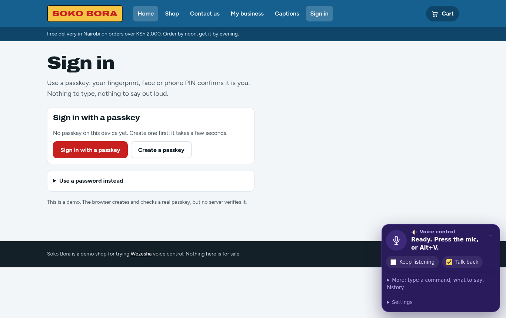

Signing in without saying your password
Speaking a password gives it to everyone in the room. Passkeys let you sign in with your fingerprint, face or phone PIN instead.
Voice control has one obvious problem: passwords. If you say yours out loud, anyone nearby hears it. If you can’t type, you can’t enter it either.
What Wezesha does about it
Wezesha never types into a password box by voice. If you say something that sounds like a password, it refuses, and it hides what you said from the screen and from its history.
Instead it uses passkeys. A passkey is a sign-in key that lives on your phone or computer. When a site asks you to sign in, your device asks you to confirm with your fingerprint, your face or your screen lock PIN. There is nothing to type and nothing to say.

With Wezesha you just say “sign in with a passkey” and confirm on your device.
Using another phone or computer
If you are on a computer that does not have your passkey, the browser shows a QR code. Scan it with your phone and confirm there. Passkeys already work this way; no site has to build anything extra.
What sites need to do
Sites need to support passkeys. It is a web standard (WebAuthn), and every current browser supports it. We are adding passkeys to our own sign-in first, with a way back in by email or SMS for someone who loses their phone.
Passkeys are also safer for everyone: they can’t be phished, guessed or leaked in a data breach, because there is no secret on the site’s server to steal.